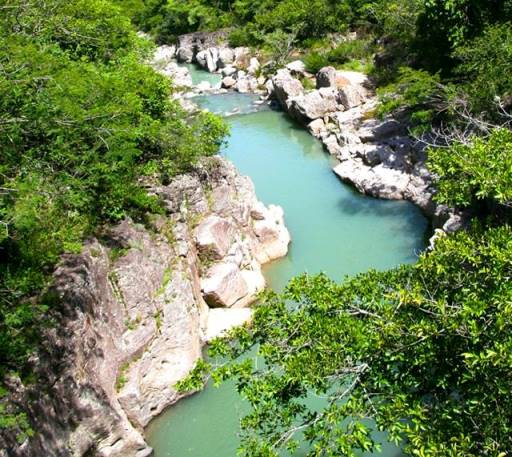

Ríos de El Salvador
Los ríos forman parte de los atractivos turísticos naturales de El Salvador, en ellos puede disfrutarse del paisaje que ofrecen los recursos naturales que tenemos.
Los ríos forman parte de los atractivos turísticos naturales de El Salvador, en ellos puede disfrutarse del paisaje que ofrecen los recursos naturales que tenemos.
Los ríos más caudalosos suelen usarse para generar energía, potabilizar agua para el consumo de la población, realizar pesca o deportes acuáticos, así como también bañarse.
El río más largo de El Salvador es el río Lempa, el cual tiene un recorrido de 422 kilómetros sobre el país y desemboca en el océano pacífico, en su recorrido se encuentran algunas presas de generación de energía, las cuales abastecen de energía eléctrica a gran parte del país.
A pesar de que la contaminación de los ríos es un tema muy grave y a veces poco abordado por las autoridades correspondientes, en el país aún existen ríos libres de contaminación y son generalmente los que se encuentran alejados de las zonas urbanas. También las cuencas de los ríos, es decir el lugar geográfico donde nace, suelen estar libres de contaminación y son ideales para visitarlos.
Los ríos son también parte de la cultura de El Salvador, en ellos se cuentan muchas leyendas populares, como por ejemplo la leyenda de La Siguanaba o la Leyenda del Cipitío. Ambos personajes de la mitología salvadoreña que comparten una historia en común menciona que la Sihuanaba era una mujer hermosa que abandonó a su hijo, el Cipitío. Y como castigo fue obligada a andar de manera errante lavando en los ríos. El Cipitío por su parte es un niño eterno que tira flores a las muchachas que llegan a los ríos para robar su corazón.
En esta sección conoceremos los ríos más importantes de El Salvador, y principalmente aquellos donde los turistas en El Salvador deciden bañarse en sus frescas aguas para pasar un día de mucha tranquilidad.
Río Lempa
El río Lempa es el segundo más grande toda América Central, extendiéndose 422 kilómetros entre Honduras, Guatemala y El Salvador.
Este río cuenta con una gran riqueza de flora y fauna, además de ser una fuente de energía gracias a las varias presas hidroeléctricas distribuidas en su extensión.
El Lempa también es un gran destino turístico, gozando con aguas que pueden navegarse con lanchas internacionales, ofreciendo una belleza natural ideal para la fotografía y la exploración, por lo que hay estaciones para visitantes en las que hay lugares para acampar, estacionamientos y guardaparques.
Extensión del río Lempa
El río Lempa ve nacimiento en las montañas volcánicas de Chiquimula, en el este de Guatemala, y continúa durante 30 kilómetros hasta llegar a Honduras. En este país recorre 31,4 kilómetros, pasando por el departamento de Ocotepeque, llegando finalmente hasta El Salvador.
Es en este último país donde se encuentra la mayor parte del río, extendiéndose 360,2 kilómetros a través de los departamentos de Chalatenango, San Vicente y Usultán hasta llegar al Océano Atlántico.
Río Sumpul
El río Sumpul es uno de los cuerpos de agua más grandes de El Salvador, extendiéndose a lo largo de 77 kilómetros entre la frontera de El Salvador y Honduras. Este es uno de los ríos más grandes de El Salvador, lo que le hace merecedor de su nombre, pues en la lengua Chorti significa en las grandes cumbres del agua.
Este río comprende una gran riqueza natural que lo ha hecho un famoso lugar turístico para las personas de El Salvador.
Por esta razón hay varios puntos para visitantes a lo largo de su extinción, para los que desean acampar y disfrutar de las aguas


Extensión del río Sumpul
El río Sumpul nace en el cerro El Pitial, en el departamento salvadoreño de Chalatenango. Esta zona se encuentra en la división geográfica entre Honduras y El Salvador y, a lo largo de los 77 kilómetros del río, este delimita la frontera entre ambos países.
Toda su extensión ocurre dentro del mismo departamento, cruzando por los municipios San Fernando, La Palma, Dulce Nombre de María, La Laguna, El Carrizal, Ojos de Agua, San José Las Flores y Nueva Trinidad.
Río Sapo
El río sapo, considerado como uno de los ríos más importantes, sino el más importante, de El Salvador, está situado entre los municipios de Arambala y Joateca. Este se encuentra rodeado por zonas boscosas con climas tropicales y es una de las pocas fuentes de agua sin contaminación, dándole el apodo de el río más limpio de El Salvador.
Además, este es parte del Área de Conservación Nahuaterique, convirtiéndolo en un parque protegido con una gran extensión.
Aún así, es un parque turístico, ofreciendo todos los servicios para que los visitantes puedan disfrutar de una visita inolvidable, pero sin llegar a perjudicar el parque.

Extensión y cuenca del río Sapo
Este río y todos sus alrededores comprenden una de las zonas naturales más ricas de El Salvador, contando con 65 kilómetros cuadrados de bosques, quebradas y aguas calmas.
Uno de los puntos importantes de este río es el color de sus aguas, que tienen un tono turquesa por todo su recorrido, lo que es un símbolo de la limpieza de las mismas.
Flora
Como ya hemos indicado en el punto anterior, este río está rodeado por una extensa área de bosque, con una particular abundancia de pinos y robles, siendo uno de los pocos ejemplos en América Latina.
Una planta especialmente particular es la hierba de sapo, cuenta con una flor blanca y es de unos 20 centímetros. El interés que recibe es que se piensa que puede ser una razón para que el río lleve el nombre de Sapo.